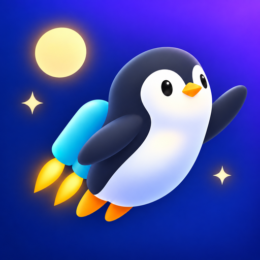

PLAY EARLY · HELP SHAPE THE GAME
Become a tester.
Play before release.
Free for Android. Joining takes about two minutes – then play for 14 days and tell us what you think.
- 1Choose a game below
- 2Join in three steps
- 3Play for 14 days & send feedback
OPEN PLAYTESTS
Choose a game.

Testers wantedPenguin to the Moon
Hold to fly. Drag to steer. How far can you go?
How to join ↓Hide details ↑
Penguin to the Moon
Hold to fly. Drag to steer. How far can you go?
Fly past changing obstacles, collect coins and take on challenges above the clouds. We’re looking for feedback on the controls, performance, menus and anything that gets in the way of a great flight.
Join in three simple steps
Join the Google Group
Sign in and choose Join group.
Join Google GroupBecome a tester
Choose Become a tester. The group alone is not enough.
Become a testerInstall & play
Install the game with the Google Play link on the testing page.
Open testing page
What to try
- Flying: Does steering feel smooth and responsive?
- Challenges & events: Try coin rain, rings and the special events. Is anything confusing or unfair?
- Menus & progress: Check the shop, settings and saved progress after restarting.
- Leaderboards: Can you sign in and see your online results?
- Optional revive: If you choose to try it, does the rewarded video return you to the flight correctly?
- Your device: Tell us about stutters, crashes, cut-off text or buttons that are hard to tap.
Testers wantedFloatstone
Hold to be a stone. Release to be a feather. How deep can you fall?
How to join ↓Hide details ↑
Floatstone
Hold to be a stone. Release to be a feather. How deep can you fall?
Smash through glass as a heavy stone, ride the wind as a light feather and slip through gaps in the earth while the ceiling keeps chasing you down. We’re looking for feedback on the one-touch control, the difficulty, performance and anything that feels unfair.
Join in three simple steps
Join the Google Group
Sign in and choose Join group.
Join Google GroupBecome a tester
Choose Become a tester. The group alone is not enough.
Become a testerInstall & play
Open Floatstone in Google Play on your phone and install it.
Open in Google Play
What to try
- Stone & feather: Does switching between holding and releasing feel instant and clear?
- Glass, wind & earth: Is it easy to see what you can smash as a stone and where you need to float through a gap?
- The ceiling: Do you notice the red warning in time before the earth catches you?
- Difficulty: Too easy, too hard or just right? Tell us your best score and how deep you got.
- Optional continue: If you choose to try it, does the rewarded video bring you back to the same spot?
- Your device: Tell us about stutters, crashes, cut-off text or buttons that are hard to tap.
BEFORE YOU START
Good to know.
- You need an Android phone with Google Play.
- Stay in the test for at least 14 days and play on several days.
- Keep the game updated through Google Play.
- It’s a test version – bugs and changes are possible.
- Watching optional videos is never required.
NEED A HAND?
Quick answers.
The testing page says I’m not eligible.
Check that you joined the Google Group and use the same Google account everywhere. If membership is pending, wait for approval – access can take a little time to appear.
I can’t find the game in Play Store search.
A closed test may not appear in search. Join the test first, then use the Google Play link from the testing page.
I can’t see the latest update yet.
A new version must finish Google Play’s review first. Check again later with the same account. You don’t need to uninstall the game.
Penguin to the Moon: my score has no public rank.
Check your Google Play Games profile visibility. A private profile may prevent your rank from appearing publicly.
Can I leave the test?
Yes, opt out on the Google Play testing page. If possible, finish the 14 days first and send us your feedback.
Found a bug? Use the feedback button of the game. Please add your phone model and what happened – but never passwords or codes.
kcodestudio.support@gmail.comHow support emails are handled